Where Cognigy fits
Cognigy is the AI orchestration layer within the NiCE CXone ecosystem, connecting customer channels, AI Agents and Enterprise’s enterprise services.
Presenter cheat sheet
- Cognigy sits between customer channels and enterprise systems as the AI orchestration layer.
- The selected CCaaS platform continues to own routing, queues, recording and agent delivery.
- Enterprise systems remain the source of truth for customer and business data.
- Cognigy coordinates AI, knowledge and approved tools, then hands context back to a live agent when needed.
- The objective is to enhance the existing estate rather than replace it.
Cognigy
- AI orchestration
- AI Agents and knowledge
- Tool and API execution
- Guardrails and analytics
NiCE CXone
- Provides the contact-centre, routing and agent experience
- Uses integrated or non-integrated handover provider patterns
- Receives transcript and approved custom attributes at handover
- Routes the interaction to the appropriate CXone skill and agent
NiCE CXone / channel platform
- Voice and digital channel entry
- Routing and queues
- Recording and agent desktop
- Live-agent delivery
Enterprise
- Systems of record
- Identity and API policy
- Business rules and data
- Retention requirements
Common questions
Does Cognigy replace the contact-centre platform?
Does Cognigy replace our CRM or policy platform?
Can the same AI Agent be reused across channels?
How Cognigy fits across the wider ecosystem
A single view of channels, CCaaS, Cognigy, AI services, tools and enterprise systems.
Presenter cheat sheet
- Cognigy is the central orchestration layer connecting channels, AI models, tools and enterprise systems.
- It is model agnostic, so providers can be changed without redesigning the whole application.
- REST APIs, MCP servers, RAG services and custom tools can all be orchestrated by the same AI Agent.
- Channels and backend systems remain decoupled, making the architecture easier to evolve.
- This provides flexibility today while reducing future migration effort.
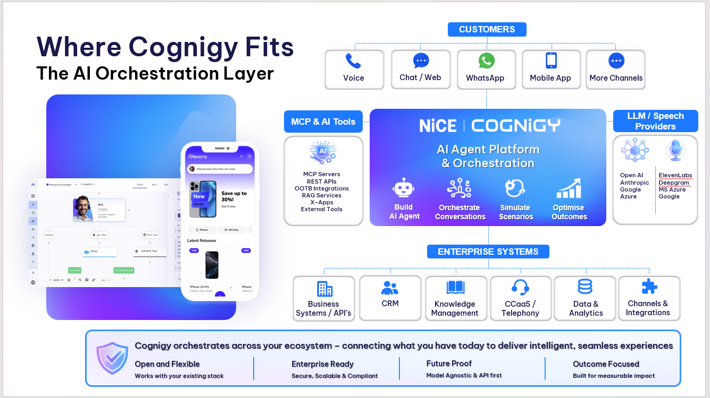
Channels
- Voice, web, messaging and mobile
- Typically owned by the selected CCaaS or channel platform
Cognigy
- AI Agents and orchestration
- Knowledge, tools, guardrails and analytics
Enterprise systems
- CRM, policy, claims and payments
- Remain the systems of record
AI services
- LLM and speech providers
- Provider-agnostic and selected by architecture
Common questions
Can we use different LLM or speech providers?
Can Cognigy use REST APIs, MCP and custom tools together?
Do enterprise systems need to change?
How Cognigy is hosted in the United Kingdom
Select a deployment location to view the relevant regional architecture, resilience and data-residency guidance.
United Kingdom presenter cheat sheet
- Cognigy is delivered as a fully managed SaaS platform hosted in NiCE-managed AWS.
- A typical UK deployment uses AWS Europe (London), eu-west-2, as the primary region.
- Ireland, eu-west-1, is commonly used as the paired backup region; confirm the contracted topology.
- Kubernetes and independently deployable services provide scalability, resilience and rolling upgrades.
- NiCE manages the platform; the customer manages AI configuration, integrations, access policy and business data.
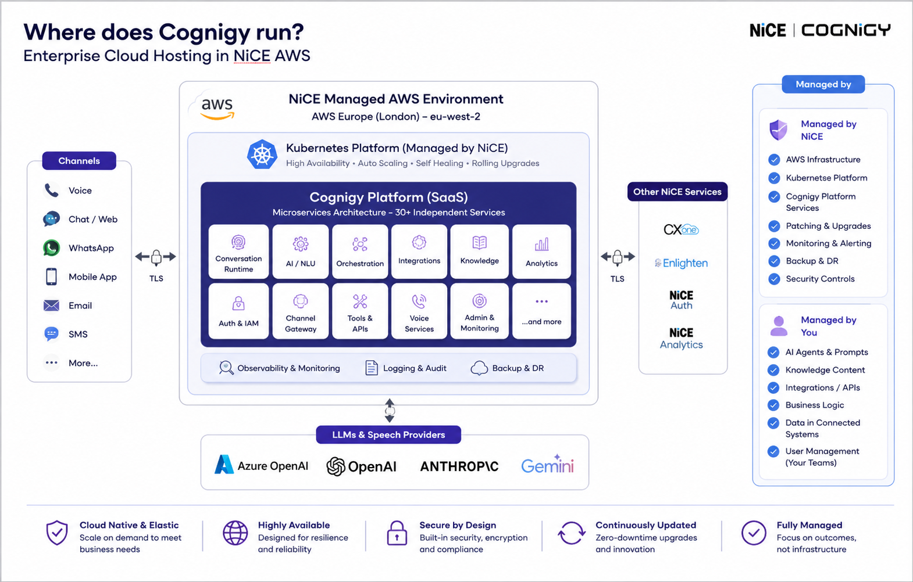
Primary region
- AWS Europe (London)
- Region code: eu-west-2
- Supports UK-aligned regional deployment
Paired resilience region
- AWS Europe (Ireland)
- Region code: eu-west-1
- Confirm replication, failover, RPO and RTO contractually
NiCE operates
- AWS infrastructure and Kubernetes
- Patching, upgrades and monitoring
- Scaling, backup and recovery processes
Customer operates
- AI Agents, prompts and knowledge
- Business integrations and API policy
- Data classification and retention requirements
United Kingdom common questions
Where is the typical UK service hosted?
What is the typical paired backup region?
Who operates the platform?
South Africa presenter cheat sheet
- Cognigy is hosted in AWS South Africa (af-south-1) for this deployment.
- The Cognigy environment is a dedicated single-tenant SaaS deployment, rather than a shared multi-tenant environment.
- The customer-provided LLM is hosted separately from Cognigy and remains part of the customer’s own architecture.
- Cognigy platform residency and LLM inference residency must therefore be assessed separately.
- The separately hosted LLM region, recovery design, RPO and RTO should be confirmed by the customer before the end-to-end residency position is finalised.
Cloud and region
- Amazon Web Services
- af-south-1 (Cape Town)
- South African Cognigy platform hosting
Tenancy
- Dedicated single tenant
- Customer-specific Cognigy environment
- Not a shared SaaS tenant
Cognigy layer
- AI Agents and orchestration
- Knowledge, prompts and tools
- Conversation processing within the contracted environment
Customer-hosted LLM
- Hosted separately by the customer
- Not part of the Cognigy hosting boundary
- Region and inference residency require separate confirmation
South Africa common questions
Where is Cognigy hosted for the South African deployment?
Is the Cognigy environment shared with other customers?
Is the customer’s LLM hosted by Cognigy?
Does this confirm that all AI processing remains in South Africa?
What still needs contractual confirmation?
CCaaS integration
NiCE CXone integration and deployment guide
Choose the correct CXone deployment pattern
NiCE CXone Integrated
Use when Cognigy.AI is provisioned as part of the NiCE CXone platform. The handover provider, authentication and supporting CXone configuration are created through the integrated deployment model.
- Create or verify the provider under Deploy > Handover Providers.
- Wait for the provider status to become Ready.
- Use the generated CXone Studio script and digital configuration.
- Select the provider in the Handover to Human Agent Node.
NiCE CXone Non-Integrated
Use when Cognigy.AI and CXone are separate tenants or deployments. The design uses CXone Bring Your Own Channel and requires manual tenant, channel and authentication configuration.
- Configure tenant and business-unit details.
- Create the CXone BYOC channel integration.
- Configure outbound and channel-integration authentication.
- Validate the digital point of contact and Studio routing.
Digital integration
Build the AI experience in Cognigy
Create the Flow or AI Agent, Knowledge AI configuration, tools, guardrails and business logic in Cognigy.
Configured in CognigyConfigure the CXone handover provider
Select Integrated or Non-Integrated, verify provider readiness and connect it to the Handover to Human Agent Node.
Cognigy and CXone setupPrepare transcript and routing context
Pass the conversation transcript and approved custom attributes such as customer segment, intent, language, urgency, verification state and case reference.
Cognigy orchestrationRoute through CXone Digital
CXone applies the digital point of contact, channel permissions, skill assignment, routing rules and agent availability.
Customer / CXone responsibilityManage the handover lifecycle
Use Lookup, Close Handover and Set Handover Inactivity where required. The CXone Studio ONRELEASE event informs Cognigy when the agent interaction is completed.
Shared lifecycle designDigital cheat guide
- Build and test the AI Agent in Cognigy.
- Confirm Integrated or Non-Integrated deployment.
- Configure the CXone handover provider.
- Prepare transcript and custom attributes.
- Configure the digital skill, point of contact and routing.
- Test acceptance, agent replies, closure and timeout behaviour.
Digital ownership
- NiCE CXone: channel, digital point of contact, skills, routing and agent delivery.
- Cognigy: AI dialogue, knowledge, tools, orchestration and handover context.
- Enterprise systems: customer data, identity, records and backend decisions.
Voice integration
The call enters NiCE CXone
CXone owns PSTN or SIP ingress, recording, call control, Studio and the initial routing decision.
Customer / CXone responsibilityRoute to Cognigy Voice Gateway
The agreed CXone Studio and telephony design routes the automated portion of the call to Cognigy Voice Gateway.
Shared solution designRun the automated voice experience
Cognigy Voice Gateway coordinates speech-to-text, text-to-speech, the AI Agent, Knowledge AI and approved backend tools.
Cognigy responsibilityTransfer to the correct CXone skill
When escalation is required, the call is transferred to the agreed CXone destination. CXone then applies skills, queueing and agent selection.
CXone routingDeliver context to the agent
Customer, intent, verification and journey context can be made available to the agent according to the selected voice and desktop integration design.
Shared context designVoice cheat guide
- CXone receives and controls the call.
- Studio routes the automated interaction to Voice Gateway.
- Cognigy runs speech, AI dialogue, knowledge and tools.
- The call is transferred to the agreed CXone skill when required.
- CXone resumes queueing, recording and agent delivery.
Voice ownership
- NiCE CXone: telephony, Studio, recording, skills, queues and agents.
- Cognigy: automated voice interaction, speech orchestration and business actions.
- Shared design: SIP/media path, transfer destination, context, failure and fallback behaviour.
Integrated capability matrix
| Capability | Integrated CXone | Non-Integrated CXone |
|---|---|---|
| Handover provider setup | Provisioned through the integrated model | Manually configured |
| Authentication | Handled as part of the integration | Tenant and channel credentials required |
| Transcript transfer | Supported through handover configuration | Supported when configured through BYOC |
| Custom attributes | Passed through the handover provider | Mapped through the configured channel integration |
| Agent availability | Check Agent Availability Node where supported | Depends on configured provider and CXone setup |
| Lifecycle monitoring | Lookup, Close Handover, inactivity and ONRELEASE | Requires equivalent provider, Studio and BYOC configuration |
| Studio involvement | Generated script must be preserved and validated | Customer-led Studio and channel configuration |
ESCALATE and END ESCALATION actions without validated guidance.NiCE CXone common questions
Which CXone deployment model should be used?
Does Cognigy directly select the final agent?
Can the transcript and custom attributes be passed?
Do we need CXone Studio?
Can Cognigy check whether agents are available?
Who configures the customer’s CXone tenant?
Genesys Cloud integration and Open Messaging cheat sheet
Digital integration
Build the AI experience in Cognigy
The Cognigy Flow, AI Agent, knowledge, tools and business logic are created and tested in Cognigy.
NiCE/Cognigy can support thisCreate a compatible Endpoint and handover provider
Create an Endpoint that supports handover, then configure the Genesys Cloud Open Messaging provider with the regional host, deployment name, queue ID, webhook secret and OAuth client credentials.
Configured in CognigyConfigure the Genesys Open Messaging platform
The customer’s Genesys team creates the Open Messaging integration, points its outbound webhook to Cognigy and configures the webhook signature secret.
Customer / Genesys responsibilityBuild the Genesys Architect inbound message Flow
The customer creates and publishes an Inbound Message Flow, retrieves any required participant data, and uses Transfer to ACD to route the conversation to the selected queue.
Customer / Genesys responsibilityConfigure routing and live-agent handover
Genesys controls the success, failure and Transfer to ACD paths, including the queue and agent-delivery logic.
Customer / Genesys responsibilityVoice integration
The call enters through Genesys
Genesys owns the PSTN/SIP ingress, call control, recording and initial routing decision.
Customer / Genesys responsibilityRoute the call to Cognigy Voice Gateway
The customer’s Genesys and telephony teams configure the agreed SIP or voice-routing path to Cognigy Voice Gateway.
Customer-led, with NiCE/Cognigy design supportConfigure the Cognigy voice experience
Voice Gateway, speech providers, the Cognigy Flow and AI Agent behaviour are configured in Cognigy.
NiCE/Cognigy can support thisCognigy handles the automated conversation
Cognigy manages speech orchestration, AI reasoning, knowledge and approved backend actions during the automated part of the call.
Cognigy responsibilityTransfer back to Genesys when required
The customer configures the transfer destination, Genesys queue and live-agent routing. Context handover is agreed as part of the solution design.
Customer / Genesys responsibilityDigital interaction
Digital cheat guide
- Create a Cognigy Genesys Endpoint and select the Flow.
- Copy its endpoint URL and create the verification token.
- Install the Genesys Bot Connector.
- Configure the endpoint URL and token in Genesys.
- Add Call Bot Connector in the Architect inbound-message Flow.
- Add success, failure and Transfer to ACD paths.
Digital ownership
- Genesys: channel entry, messenger session, routing and agent queue.
- Cognigy: automated AI dialogue, knowledge, tools and business orchestration.
- Enterprise Systems: customer data, identity, business records and backend decisions.
Voice interaction
Voice cheat guide
- Genesys receives and controls the call.
- The call is routed to the agreed Cognigy voice entry point.
- Voice Gateway manages speech services and connects to the Cognigy Flow.
- Cognigy handles dialogue and approved backend actions.
- When required, the call and available context are handed back to Genesys for agent routing.
Voice ownership
- Genesys: PSTN, call control, queueing, recording and agent delivery.
- Cognigy: automated voice conversation and orchestration.
- Shared design: SIP/media path, transfer method, context handover and failure behaviour.
Common questions
Who configures Genesys?
Is digital configured the same way as voice?
Who owns live-agent routing?
How Cognigy securely connects to enterprise services
Use the standard REST pattern where possible. Expand the alternatives only when stricter network or exposure requirements apply.
Standard connectivity
Standard Connectivity — Presenter Cheat Sheet
Use this when explaining the normal enterprise deployment.
- The standard integration pattern is outbound REST over HTTPS from Cognigy SaaS to approved enterprise APIs.
- The customer secures those APIs using OAuth, API keys, an API Gateway, WAF policies, IP allowlisting and least-privilege permissions.
- Cognigy never receives unrestricted network access; it can only call the APIs and tools that have been explicitly configured.
- This is the recommended architecture and the normal pattern for most enterprise Cognigy deployments.
- No direct database access is normally required because Cognigy communicates through governed enterprise APIs.
REST over HTTPS Standard
What it is
Cognigy sends an outbound HTTPS request to an approved REST endpoint.
How it works
A Flow node or tool sends GET, POST, PUT, PATCH or DELETE requests through the customer’s governed API layer.
Typical controls
- Trusted TLS certificate
- OAuth 2.0 or API key
- WAF and rate limits
- Cognigy egress-IP allowlisting
Best suited to
Most enterprise integrations where a governed API can be securely reached from SaaS.
Authentication and credentials Standard
Supported approaches
- OAuth 2.0 / bearer tokens
- API key / X-API-Key
- Basic authentication
- Custom headers
Credential handling
Credentials are stored in encrypted Cognigy Connections and should be separated by environment.
Recommended design
- Least-privilege scopes
- Short-lived tokens
- Separate production credentials
AI and API guardrails Standard
Restricted tools
The AI can only use tools and Flow nodes explicitly configured for the use case.
Deterministic gates
Authentication, payments and high-risk actions can require rule-based validation.
Operational controls
- Timeouts and retries
- Error handling
- Logging controls
- Auditable execution
When standard REST connectivity isn't possible
When Standard REST Connectivity Isn't Possible — Presenter Cheat Sheet
Use this when the customer says, “We do not want to expose our internal APIs to the internet.”
- The first recommendation is normally an Integration Gateway or Relay Service rather than exposing internal systems directly.
- Cognigy calls the gateway over HTTPS; the gateway authenticates and validates the request, then communicates privately with internal applications.
- Enterprise middleware such as MuleSoft, Boomi or Azure Integration Services can perform the same role while adding transformation, orchestration and governance.
- Custom Cognigy Extensions can simplify specialist integration logic or authentication, but they do not create private network connectivity. The customer owns and maintains the custom code.
- VPN, dedicated networking or sovereign deployment options should only be considered where standard integration patterns are unsuitable and require NiCE/Cognigy architecture validation.
Use these when core services should not be directly exposed through the standard public REST pattern.
Integration Gateway (Recommended) Preferred alternative
What is it?
A small, controlled API layer that sits between Cognigy and the customer's internal applications. It can be an API Gateway, a DMZ service or a lightweight relay.
How does it work?
Cognigy sends an outbound HTTPS request to the Integration Gateway. The gateway authenticates and validates the request, then calls the internal system over the customer's private network.
Why use it?
- Core internal systems remain private
- Only approved operations are exposed
- OAuth, WAF, rate limits and allowlisting are centralised
- Requests can be logged and audited
Who owns it?
The customer normally owns and operates the gateway. NiCE/Cognigy helps define the required interface and configures the Cognigy-side integration.
Enterprise Middleware / iPaaS Alternative
What is it?
An enterprise integration platform such as MuleSoft, Boomi, Azure Integration Services or another middleware layer.
How does it work?
Cognigy calls the middleware over HTTPS. The middleware validates, transforms and orchestrates the request before calling internal services privately.
When is it useful?
- Several internal systems must be coordinated
- Payload or protocol transformation is required
- Integration governance is already centralised
- The customer wants one reusable integration layer
Who owns it?
The customer owns and maintains the middleware platform and internal integration logic.
Custom Cognigy Extension Custom code
What is it?
Customer-developed JavaScript or TypeScript code packaged as a reusable Cognigy Flow Node, integration or Knowledge Connector.
How does it work?
The Extension is uploaded into Cognigy and used inside a Flow to perform custom authentication, call third-party SDKs, transform payloads or encapsulate reusable logic.
Important limitation
An Extension does not create a private network route. It still needs a reachable API, service or middleware relay.
Customer responsibility
- Source code and repository ownership
- Security review and testing
- Dependency and compatibility updates
- Ongoing support and maintenance
Private Connectivity (Special Design) Requires validation
What is it?
A non-standard network design that could involve VPN, private routing, dedicated infrastructure or a sovereign deployment arrangement.
When would it be considered?
Only when an Integration Gateway or enterprise middleware cannot satisfy the customer's security, regulatory or architectural requirements.
What must be confirmed?
- Hosting and networking model
- Security and support ownership
- Commercial implications
- Availability in the selected region
Positioning
This is not standard shared-SaaS functionality and requires formal validation with NiCE/Cognigy Architecture.
Common questions
Do internal APIs have to be fully public?
Can Cognigy connect through a VPN by default?
Can a Cognigy Extension create private connectivity?
Who maintains a custom Extension?
Choose the right way to build, connect and extend Cognigy
Cognigy supports several complementary integration patterns. MCP standardises how AI tools are discovered and invoked, Extensions add reusable platform capabilities, REST connects governed services, and Knowledge Connectors bring approved external content into RAG.
Presenter cheat sheet
- The NiCE Cognigy MCP Server is primarily a developer productivity capability: it connects MCP clients such as Claude, Cursor, Codex and VS Code to the Cognigy.AI REST API.
- It can create, test and iteratively improve Cognigy AI Agents from a developer environment without manually moving between tools.
- Custom Extensions are different: they run inside Cognigy Flows as reusable Extension Nodes or Knowledge Connectors.
- MCP does not replace REST APIs or Extensions. Each pattern serves a different architectural purpose and they can be used together.
- Security remains explicit: API keys, environment variables, input validation, rate limiting, least privilege and approved endpoints still apply.
How the Cognigy MCP Server fits
Comprehensive API workflows
- Create Projects, AI Agents, Flows and Endpoints
- List and inspect existing resources
- Manage Packages and Knowledge Stores
- Test agents through their endpoints
Faster iteration
- Create an initial persona and job description
- Run a test conversation
- Evaluate the response
- Update the AI Agent and retest
Knowledge and RAG
- Create a Knowledge Store
- Ingest an approved source
- Attach knowledge tooling to an AI Agent
- Test answers against approved content
Safe operation
- Zod input validation
- Rate limiting
- RFC 7807 error responses
- API keys supplied through environment variables
Typical MCP workflows
Create an AI Agent Build
Example request
“Create a Support Bot in Project <projectId>, give it a customer-support persona, configure its LLM and return a REST Endpoint for testing.”
Representative workflow
The MCP client can use setup and creation tools to provision the LLM resource, AI Agent, Flow and Endpoint.
Test and improve an Agent Iterate
Test
Send a customer question to the Agent through its Endpoint and return the response in the MCP client.
Improve
Evaluate the result, update the job description or instructions, test again and compare the responses.
Add approved Knowledge RAG
Ingest
Create a Knowledge Store and add an approved URL or source.
Attach
Create or configure the relevant Agent tool so the AI Agent can use the Knowledge Store when answering.
Review resources and manage Packages DevOps
Inspect
List Projects, AI Agents and recent conversations to understand the current environment.
Move
Upload and inspect a Package, preview an import and import it into the target Project using approved selections.
MCP Server setup and security
Prerequisites
- Cognigy.AI API key
- Cognigy.AI API base URL
- MCP-compatible client
- Node.js 20+ for CLI/manual setup
Setup options
- Claude Desktop .mcpb package
- Command-line installation
- Manual configuration
- Environment-based credentials
Security
- API keys are not logged
- Inputs validated before API calls
- Rate limiting protects the API
- Standardised error responses
Privacy
- Requests are sent only to the configured Cognigy API URL
- The MCP Server does not collect or store customer data
- Data remains between the MCP client and Cognigy instance
Extension Framework
Extensions enhance Cognigy Flows with reusable custom Nodes, third-party integrations and Knowledge Connectors. They are JavaScript or TypeScript packages and are distinct from the developer-facing Cognigy MCP Server.
Extension Nodes
- Call third-party APIs
- Run lightweight custom logic
- Wrap SDKs or npm modules
- Create reusable convenience Nodes
Knowledge Connectors
- Connect external knowledge databases
- Import documents or structured data
- Create Knowledge Sources
- Schedule regular knowledge imports
Delivery options
- Install from the Marketplace
- Build a custom Extension
- Modify an existing Extension
- Publish approved Extensions
Development requirements
- TypeScript or JavaScript
- Node.js and npm
- Security and dependency review
- Testing and lifecycle ownership
Cognigy Serverless execution runtime
Beginning with Cognigy.AI 2026.9 for SaaS, organisations are gradually migrated to the unified Cognigy Serverless runtime in the background. Existing Extension API functions remain unchanged, although Extensions that relied on unsupported or unintended runtime behaviour may require remediation.
Extension limits and design guidance
| Area | Default / guidance | Architectural implication |
|---|---|---|
| Intended workload | Lightweight operations | Use middleware or a dedicated service for long-running, compute-heavy or stateful processing. |
| Execution timeout | 20 seconds by default | Design fast API operations and predictable failure handling. On-premises customers can configure the timeout. |
| API calls | Up to 10 calls per execution, excluding api.log() | Aggregate calls where possible and avoid chatty integration patterns. |
| Argument object size | 62 KB by default | Pass only the data required for the operation rather than large documents or payloads. |
| Runtime cleanup | After 15 minutes of inactivity | Do not depend on local memory or filesystem state remaining available. |
| Error handling | Errors are written to input.extensionError | The Flow can branch, recover, retry or hand over without terminating the entire execution. |
Which technology should I use?
| Requirement | Recommended pattern | Why |
|---|---|---|
| Call a reachable, governed enterprise API | REST over HTTPS | The simplest and most transparent standard integration pattern. |
| Encapsulate reusable integration logic inside a Flow | Extension Node | Creates a reusable, user-friendly Node for custom APIs, SDKs, authentication or transformation. |
| Import content from an external knowledge database | Knowledge Connector | Brings approved external content into a Cognigy Knowledge Store for RAG. |
| Build and manage Cognigy resources from Claude, Cursor, Codex or VS Code | NiCE Cognigy MCP Server | Exposes Cognigy.AI API workflows to MCP-compatible developer clients. |
| Expose a reusable business tool to an AI Agent | Agent tool, REST API, Extension or suitable MCP integration | Select based on where the tool runs, how it is governed and which clients need to consume it. |
| Coordinate several systems, transform protocols or hide private services | Integration Gateway / iPaaS | Centralises security, routing, orchestration and private-network access outside the conversational runtime. |
| Answer from approved enterprise content | Knowledge AI | Provides governed retrieval and grounding rather than unrestricted model knowledge. |
Common questions
Is the NiCE Cognigy MCP Server the same as an MCP server used by a runtime AI Agent?
Does MCP replace REST APIs?
Does a custom Extension create private connectivity?
Who owns custom Extension code?
Enterprise CRM connectivity
Select the CRM platform to view its native data model, authentication, integration patterns and agent-workspace considerations.
Native Dynamics concepts
- Dataverse tables and custom entities
- Contacts, Accounts, Cases and Activities
- Dynamics 365 Customer Service
- Omnichannel workstreams and queues
- Power Automate and Power Platform
- Microsoft Entra ID and OAuth 2.0
Cognigy integration options
- Microsoft Dynamics Extension Nodes
- Create Entity
- Retrieve Entity
- Search Entity
- REST calls to Dataverse or private enterprise APIs
- Custom Extension for reusable governed operations
Typical interaction pattern
Identify and verify the customer
Collect only the information required for the current task and complete identity and authorisation controls before protected CRM data is retrieved.
Retrieve approved Dataverse records
Use the Dynamics Extension or a governed REST operation to search Contacts, Accounts, Cases or a custom table.
Complete the business task
Create or update a record, add an Activity, retrieve case status or invoke a downstream process through Power Platform or an enterprise API.
Preserve context for the agent
Pass the customer, intent, verification state, case reference and conversation summary into the selected Customer Service or CCaaS workspace.
Dynamics common questions
Does Cognigy replace Dynamics 365?
Can Cognigy use the standard Dynamics Extension?
How is authentication normally handled?
Ground AI Agents in approved enterprise knowledge
A practical cheat sheet explaining what Cognigy Knowledge AI is, how Retrieval-Augmented Generation works and how an AI Agent uses the correct knowledge for each job.
Presenter cheat sheet
- Knowledge AI is Cognigy’s native RAG capability: it retrieves relevant information from approved content before an LLM generates the answer.
- Content is organised as Knowledge Store → Knowledge Source → Knowledge Chunk.
- The AI Agent does not need the complete document in every prompt. Cognigy searches the knowledge base and injects only the most relevant chunks.
- AI Agent Knowledge is reusable knowledge associated with the overall AI Agent. Job Knowledge is selected for one specific AI Agent Node and task.
- Use separate Stores, Source Tags and clearly described Knowledge Tools so the Agent searches only the content relevant to the current use case.
1. Ingestion
Approved content is uploaded or imported into a Knowledge Store.
2. Chunking
Documents are divided into smaller, searchable Knowledge Chunks.
3. Embeddings
Chunks are converted into numerical representations of meaning for semantic search.
4. Retrieval
The user’s request is matched against the most relevant chunks, optionally filtered by Store or Source Tags.
5. Generation
The LLM receives the retrieved evidence and generates a response within the Agent’s instructions and guardrails.
Knowledge structure
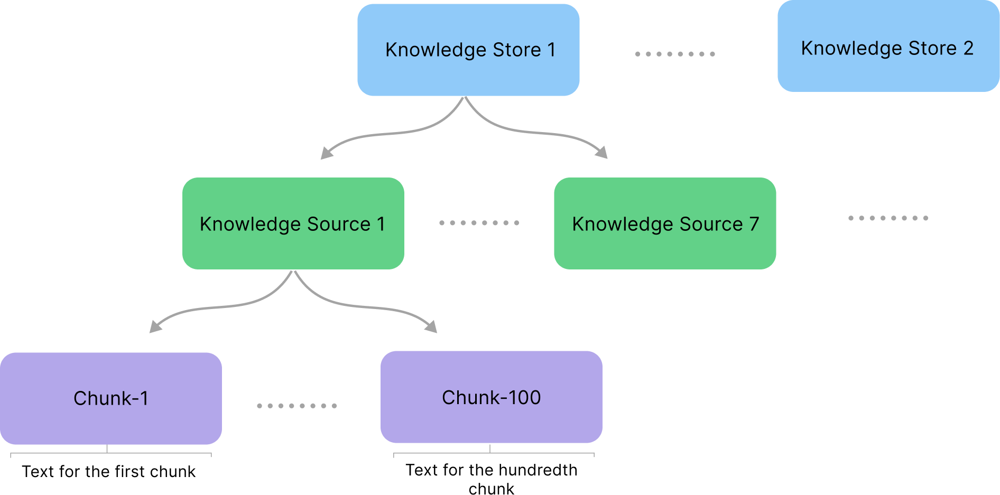
Knowledge Store
A logical collection of related content within a Cognigy Project, such as Retail Banking, Insurance Claims or Employee Support.
Knowledge Source
A document, webpage or imported source. Metadata and Source Tags can identify its title, URL, audience, product or region.
Knowledge Chunk
A small, self-contained unit retrieved at run time. Good chunking improves relevance and reduces unnecessary context.
Supported source types
| Source | Use it for | Cheat-sheet note |
|---|---|---|
| CTXT | Curated FAQs, policies and content requiring precise chunk boundaries or metadata. | Cognigy’s recommended structured format where maximum control is required. |
| Manuals, policy documents, product guides and long-form reference material. | Review the extracted chunks, especially for complex layouts. | |
| DOCX / PPTX / TXT | Business documents, presentations and plain text. | The selected parser converts the content into searchable chunks. |
| Images | JPEG, JPG, PNG, BMP, HEIF and TIFF containing readable text. | The Advanced Parser can use OCR; validate image quality and privacy requirements. |
| Web page | Publicly accessible pages. | One-time ingestion; recreate or synchronise through a connector when content changes. |
| Knowledge Connector | External repositories, document libraries, databases or help centres. | Imports content into Cognigy Knowledge AI and can support scheduled synchronisation. |
How the AI Agent uses knowledge
AI Agent Knowledge
Knowledge associated with the reusable AI Agent persona. Use this for information the Agent may need across several jobs.
- Company-wide service information
- Common terminology and policies
- Reusable product knowledge
- Enabled through Use AI Agent Knowledge
Job Knowledge
Knowledge configured for one AI Agent Node and its specific job. Use this when a task needs a narrower or different evidence set.
- Claims knowledge for a Claims job
- Collections policy for a Collections job
- Internal procedures for an Employee Support job
- Enabled through Use Job Knowledge
| Setting | Behaviour | Use when |
|---|---|---|
| Never | The job does not query Knowledge AI. | The task is deterministic, tool-led or does not require knowledge. |
| When Required | The AI Agent decides when a knowledge query is needed. | Knowledge is useful for some requests but not every conversational turn. |
| Once for Each User Input | Knowledge is queried after every user message. | Nearly every turn depends on retrieved evidence; account for additional latency and query consumption. |
Use the right knowledge for the right use case
Separate broad and specialist knowledge
Keep reusable company information at AI Agent level and attach specialist Stores to the relevant job.
Give Knowledge Tools explicit names and descriptions
For multiple Stores, use IDs such as search_home_insurance and explain exactly when the Agent should call each tool.
Filter with Source Tags
Tag content by product, country, audience, language or lifecycle state and apply AND/OR filtering to reduce irrelevant results.
Do not use knowledge for transactional truth
Use Knowledge AI for approved explanatory content. Retrieve live balances, claim status and customer-specific data through governed tools and systems of record.
Test retrieval, not only the final wording
Inspect the returned chunks, tags, metadata and distances. A polished answer is not reliable if the wrong source was retrieved.
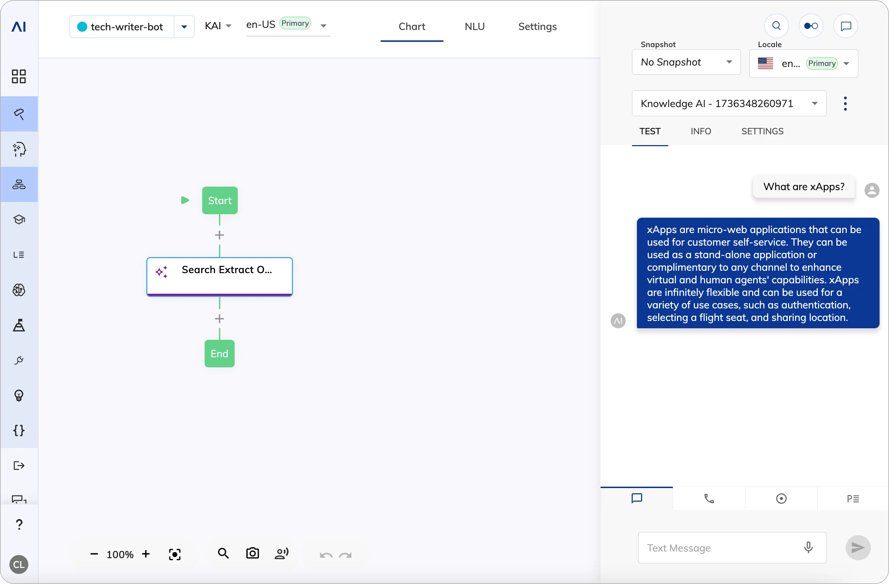
Common questions
Does the LLM read every document for every question?
What is the difference between AI Agent Knowledge and Job Knowledge?
Should customer balances or case status be stored in Knowledge AI?
How do we stop the Agent searching the wrong content?
Connect an existing enterprise knowledge-management solution
Use this pattern when the organisation already governs content in a dedicated knowledge-management platform and wants AI Agents or contact-centre applications to retrieve from that estate.
Presenter cheat sheet
- This is separate from storing and managing knowledge directly in Cognigy Knowledge AI.
- NiCE Knowledge Hub provides a CXone knowledge integration layer and can connect to CXone Knowledge Management (Expert) and other supported sources.
- In a CXone-integrated Cognigy installation, the Retrieve Knowledge Node can retrieve information from a Knowledge Hub for use by the AI Agent.
- The existing knowledge platform remains the content-authoring and governance system; Cognigy orchestrates when and how retrieved evidence is used.
- Confirm supported connectors, permissions, metadata filters, indexing behaviour and release-specific limitations during design.
Use Cognigy Knowledge AI when
- Cognigy should hold and index the approved content
- Designers need direct control over Sources, Chunks, metadata and tags
- The same knowledge is primarily for Cognigy AI Agents and Flows
- Knowledge Connectors can synchronise the required source
Use a KM integration when
- An enterprise KM platform already owns authoring and governance
- Knowledge must be shared across CXone and other applications
- Existing article permissions and lifecycle controls should remain central
- The target architecture supports the required Knowledge Hub integration
Typical implementation
Confirm the system of record
Identify where authors create, approve, publish and retire knowledge.
Configure the knowledge integration
Connect the supported source to NiCE Knowledge Hub and confirm indexing, permissions, language and metadata behaviour.
Configure retrieval in Cognigy
Use the Retrieve Knowledge Node in a supported CXone-integrated Cognigy installation and select the relevant Knowledge Hub and filters.
Control the AI Agent’s use of results
Tell the AI Agent when knowledge should be retrieved, how to use the returned evidence and what to do when no suitable answer is found.
Test governance and relevance
Validate permissions, stale-content handling, article lifecycle, filtering, no-match behaviour and agent/customer presentation.
Common questions
Does Cognigy replace the enterprise knowledge-management platform?
Is NiCE Knowledge Hub the same as Cognigy Knowledge AI?
Can this be used in every Cognigy environment?
Cognigy AI Ops Center
Move through platform health, component performance, alerting and root-cause analysis without scrolling through one long page.
Presenter cheat sheet
- As AI Agents scale, the challenge moves from building them to operating them reliably 24/7.
- Cognigy AI Ops Center provides one place to understand traffic, latency, component health and errors.
- Alerts help teams move from reactive firefighting to proactive intervention.
- When something fails, teams can isolate whether the issue sits with an endpoint, Flow, transformer, API or provider.
- The outcome is operational confidence to scale AI safely.
Opening narrative
“As organisations deploy more AI Agents, three challenges emerge: managing scale, maintaining visibility and controlling operational risk. Cognigy AI Ops Center applies the same operational disciplines used for a human workforce to an AI workforce.”
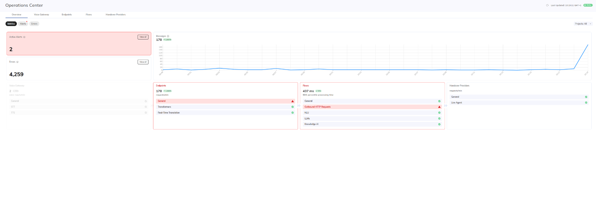
Objective
Introduce the overall health of the AI estate and show that operations teams have a single operational view.
Talk track
- This is the operational dashboard for the AI workforce, showing traffic, errors, alerts and component health in one place.
- Red indicators immediately highlight where investigation is required, while healthy services remain visible alongside them.
- The aim is to identify emerging issues before customers notice a degradation in service.
Key takeaway
Operations teams have immediate visibility into the overall health of every AI Agent and its supporting services.
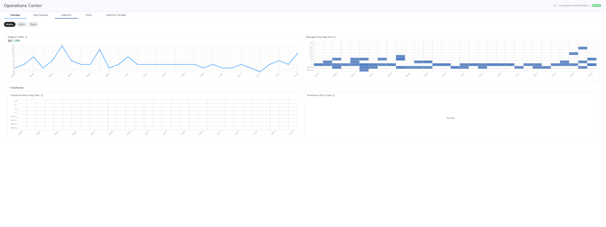
Objective
Show how individual customer endpoints and preprocessing components are monitored.
Talk track
- Here we can monitor endpoint traffic, message-processing time and transformer performance.
- If response times begin to increase, we can determine whether the issue starts at the channel endpoint or during transformation.
- Error counts and latency trends allow teams to isolate affected channels without treating the whole platform as one black box.
Key takeaway
Endpoint and transformer issues can be isolated before they affect the wider AI estate.
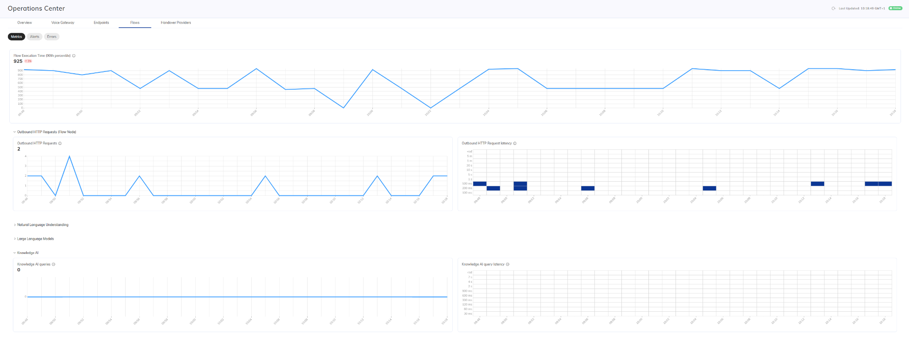
Objective
Demonstrate end-to-end monitoring across every component involved in an Agentic AI interaction.
Talk track
- Cognigy monitors each execution component separately, including Flow runtime, outbound API calls, Knowledge AI, NLU and LLM activity.
- For each component we can inspect volumes, processing time, latency and failures to identify exactly where performance is degrading.
- This is especially important for Agentic AI because one customer response may depend on several reasoning steps, tool calls and external services.
Key takeaway
Cognigy provides component-level observability across the full Agentic AI execution path, making latency and dependency issues easier to identify.
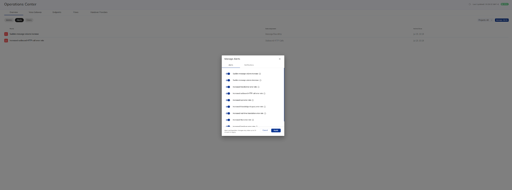
Objective
Show how teams move from passive monitoring to proactive alerting.
Talk track
- Alert categories can be enabled for meaningful operational conditions such as message spikes, HTTP failures, transformer errors or LLM issues.
- Teams decide which conditions matter rather than receiving noise for every minor fluctuation.
- This allows operations to respond before a technical issue becomes a visible customer problem.
Key takeaway
Operational teams are alerted to meaningful changes before customers are affected.
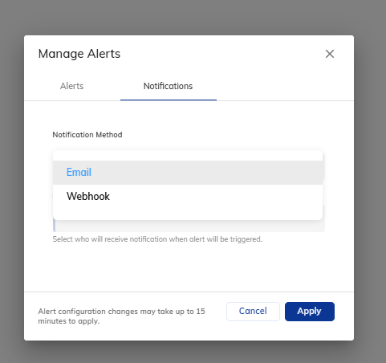
Objective
Show how Cognigy alerts integrate into existing operational processes.
Talk track
- Notifications can be delivered by email for direct operational awareness.
- Webhook delivery allows Cognigy alerts to feed existing ITSM, incident-management or observability platforms.
- The AI estate can therefore be managed through the same operational workflows already used elsewhere in the organisation.
Key takeaway
AI monitoring fits into existing enterprise support and incident-management processes.
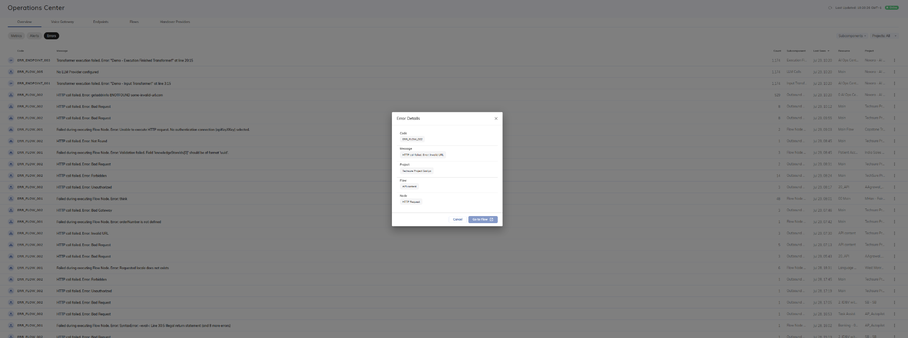
Objective
Demonstrate fast root-cause analysis when an issue occurs.
Talk track
- Each error identifies the code, message, project, Flow and node involved.
- Teams can move directly from the operational symptom to the exact component that requires attention.
- This reduces time spent searching through logs and accelerates recovery.
Key takeaway
Faster root-cause isolation means faster resolution and less customer impact.
Common questions
What does Cognigy AI Ops Center monitor?
Can alerts feed existing tooling?
Why is component latency important for Agentic AI?
Cognigy Agentic Analytics
Move through operational reporting, conversation detail, configuration and AI analysis using the sub-tabs.
Presenter cheat sheet
- Operational reporting shows adoption, containment, engagement and conversation volumes.
- Conversation views provide transcript and metadata visibility for quality and investigation.
- Cognigy Agentic Analytics evaluates LLM-powered conversations for topics, sentiment, escalations, resolution and custom criteria.
- Analysis can be scheduled for selected channels, endpoints or AI Agent versions.
- Analytics APIs allow this data to be combined with wider enterprise BI and outcome reporting.
Opening narrative
“Operational metrics only tell part of the story. Agentic AI introduces new questions around reasoning quality, new customer topics, knowledge gaps and whether the interaction delivered a meaningful outcome.”
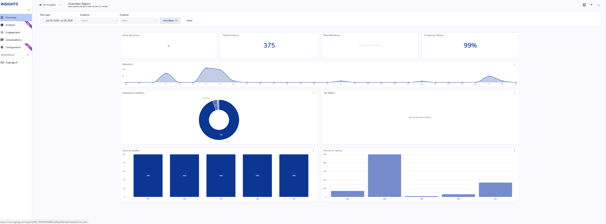
Objective
Establish the scale, adoption and operational performance of the AI estate.
Talk track
- The Overview shows session volumes, containment, channel mix and usage trends.
- It provides the executive-level operational picture before moving into deeper engagement or quality analysis.
- This answers the first question: how much is the AI being used and how much demand is it handling?
Key takeaway
Start with adoption and operational performance before assessing conversation quality.
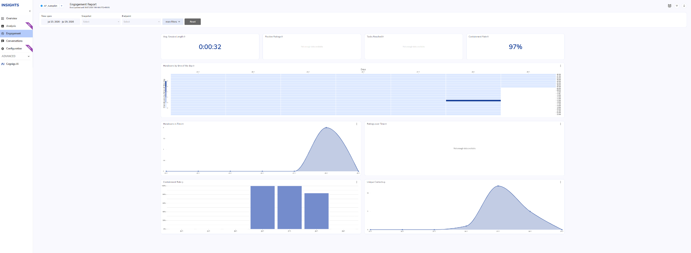
Objective
Show how customers are engaging with the AI and where journeys move to a human agent.
Talk track
- Engagement metrics show session length, containment and handover behaviour over time.
- These trends help identify where customers remain engaged and where automation breaks down.
- The data can reveal journeys that need optimisation or further automation.
Key takeaway
Engagement reporting explains how customers use the AI and where escalation occurs.
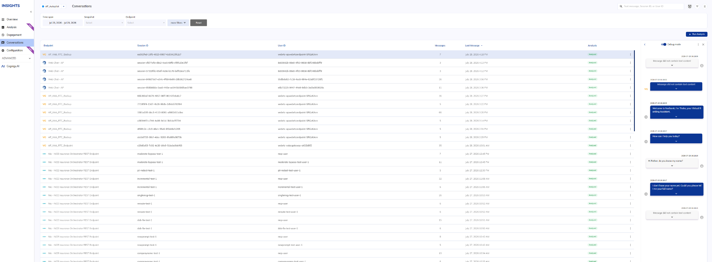
Objective
Connect aggregate analytics back to the underlying customer conversation.
Talk track
- The Conversations view provides session metadata, message counts, timestamps and analysis status.
- Teams can open the full transcript to understand the context behind a metric or result.
- This makes analytics transparent and traceable down to the individual interaction.
Key takeaway
Every insight can be investigated against the original conversation.
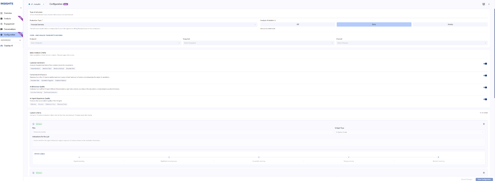
Objective
Show how Cognigy Agentic Analytics is targeted and scheduled.
Talk track
- Analysis can be scheduled daily or weekly for a specific endpoint, channel, snapshot or AI Agent version.
- Customers can enable standard criteria and add custom evaluations aligned to their own objectives.
- This ensures the analysis is focused on the exact experience being measured.
Key takeaway
Analytics can be tailored to the right Agent, channel, version and business objective.
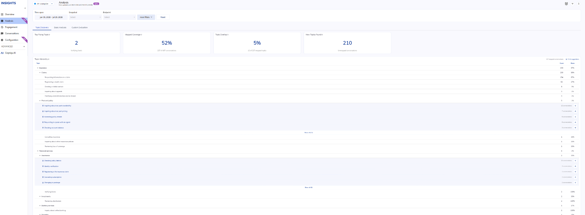
Objective
Reveal what customers are actually asking about, including unexpected topics.
Talk track
- Topic Discovery groups conversation drivers into parent and child themes.
- It highlights coverage, overlap and new topics that were not part of the original design.
- These findings identify knowledge gaps and new automation opportunities.
Key takeaway
Topic discovery turns real conversations into a roadmap for improvement.
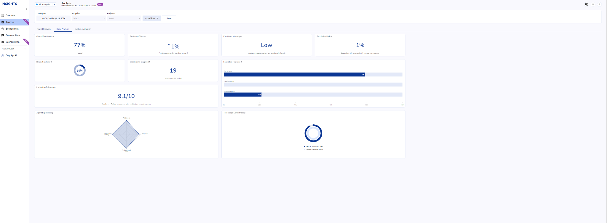
Objective
Evaluate the quality and behaviour of LLM-powered conversations.
Talk track
- Basic Analysis reviews sentiment, emotional intensity, escalation risk and resolution.
- It also evaluates instruction following and whether tools were used correctly.
- This goes beyond operational reporting and measures how well the Agentic AI behaved.
Key takeaway
Cognigy Agentic Analytics evaluates conversation quality, not just volume and containment.
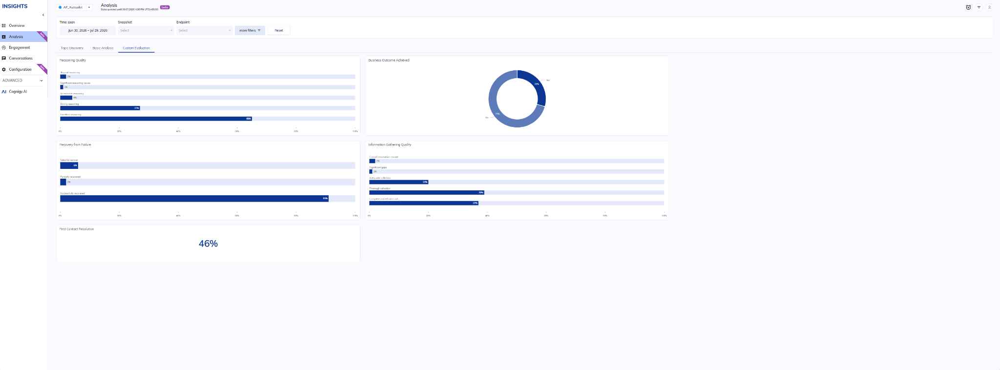
Objective
Measure AI performance against organisation-specific outcomes.
Talk track
- Custom evaluations can score reasoning quality, recovery from failure, information gathering and business outcomes.
- The measures can reflect regulatory, service or commercial priorities.
- This allows AI performance to be assessed against what the organisation actually values.
Key takeaway
Custom evaluation connects AI behaviour directly to business objectives.
Common questions
What is the difference between Insights and Cognigy Agentic Analytics?
Can analysis target a specific Agent version?
Can the data be exported to enterprise BI?
Cognigy Simulator
Use Cognigy Simulator to validate AI Agent behaviour before release and to retest it whenever prompts, knowledge, tools, models or Snapshots change.
Presenter cheat sheet
- Agentic AI creates many possible conversation paths, making manual testing alone difficult to scale.
- Cognigy Simulator runs realistic conversations using personas, missions and measurable success criteria.
- Use it for UAT, regression testing, model comparison and validation of new AI Agent versions.
- Snapshots provide versioned, deployable states of the AI Agent, so teams can test a specific Snapshot before promoting it.
- Results show which criteria passed or failed and let teams inspect the underlying simulated conversation.
Why use Cognigy Simulator?
User acceptance testing
Validate that the AI Agent completes the intended customer journeys and meets agreed business criteria before release.
Regression testing
Repeat the same scenarios after changing prompts, tools, knowledge or flow logic to confirm that existing behaviour has not degraded.
Model comparison
Run equivalent scenarios against different supported LLMs or model configurations and compare success, consistency and conversation quality.
Snapshot and release validation
Test a specific Cognigy Snapshot as the versioned release candidate, then rerun the test suite when a new Snapshot is created.
Edge-case coverage
Generate variations in wording, behaviour and conversation paths that are difficult to cover consistently through manual testing.
Continuous quality assurance
Run a repeatable suite on a regular cadence to identify quality drift as models, knowledge sources and external services evolve.
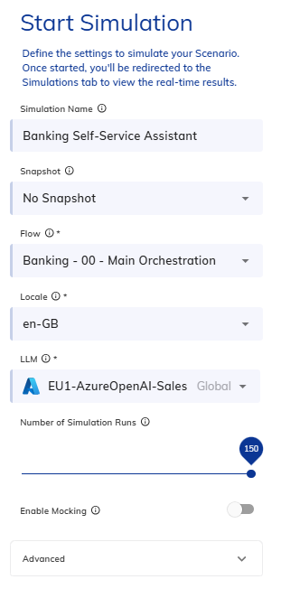
Objective
Show that the test can target a specific configuration and release candidate.
Talk track
- Select the relevant Flow and locale for the use case.
- Select a Snapshot when testing a specific versioned state of the AI Agent; use No Snapshot when testing the current working configuration.
- Select the LLM to validate the deployed model or compare alternatives.
- Choose the number of runs to create enough variation for meaningful evaluation.
Key takeaway
The same test suite can be repeated against different Snapshots, models and configurations.
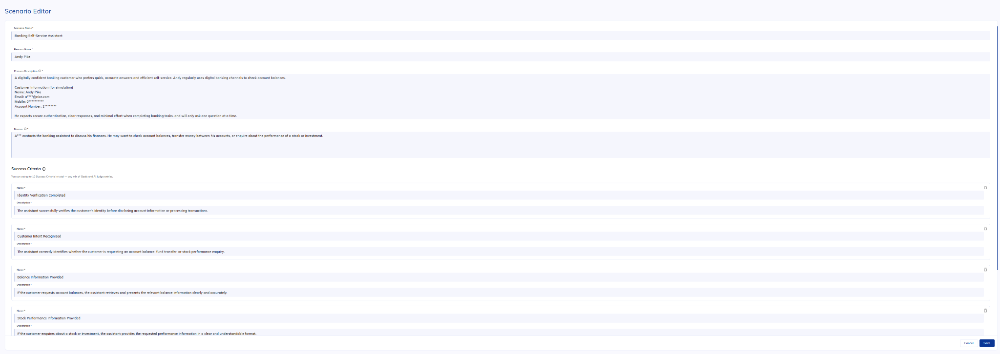
Objective
Demonstrate automated testing at a scale that manual UAT cannot achieve.
Talk track
- The persona controls how the simulated customer behaves.
- The mission defines what the customer is trying to achieve.
- Success criteria define the expected business and conversational outcomes.
- Multiple runs introduce realistic variation across wording, reasoning paths and edge cases.
Key takeaway
Cognigy Simulator turns repeatable UAT and regression testing into an automated process.
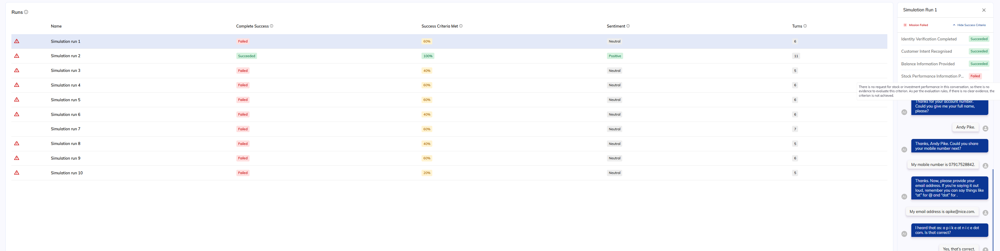
Objective
Show how failures are identified, explained and converted into improvement actions.
Talk track
- Compare complete success and individual success-criterion performance across runs.
- Open a failed run to see exactly which criterion was missed and inspect the full conversation.
- Use the evidence to refine prompts, knowledge selection, tool instructions, deterministic logic or the chosen model.
- Rerun the same suite against the updated Snapshot to confirm that the issue is resolved without introducing regressions elsewhere.
Key takeaway
Cognigy Simulator provides evidence of where and why an AI Agent failed, not simply a pass or fail score.
Common questions
When should we use Cognigy Simulator?
How do Snapshots relate to testing?
Can different AI models be compared?
What does Cognigy Simulator evaluate?
InfoSec, data governance and enterprise assurance
Use the tabs below to move between data handling, security architecture, compliance and post-interaction governance.
Presenter cheat sheet
- Cognigy is an enterprise-grade SaaS platform with controls across infrastructure, platform and application layers.
- Core customer and business data remains in the customer’s own systems; Cognigy is not the system of record.
- Data is protected through encryption, access controls, secure credentials, retention policies, masking and redaction.
- Transcripts, tool calls and API actions can be logged and audited for operational and compliance purposes.
- Cognigy operates under formal security and compliance programmes, including ISO 27001 and SOC 2 Type II.
Talk track
“Cognigy is designed to help organisations adopt AI without losing control of data, security or governance. The platform secures the underlying service, while customers retain ownership of their business data, policies and access rules.”
Objective
Explain how Cognigy handles operational data while the customer retains ownership of core business data.
Talk track
- Cognigy is not a CRM, policy or claims platform; those systems remain the source of truth.
- Cognigy may store operational data such as transcripts, logs and analytics according to configured retention policies.
- Sensitive values can be masked, redacted or removed, while expired data can be deleted automatically using TTL policies.
Key takeaway
Cognigy processes and orchestrates interactions, but long-term ownership of business data remains with the customer.
Data ownership
- Core records stay in customer systems
- Accessed through approved integrations
Retention
- Configurable policies
- Automatic deletion when TTL expires
- Aligned to customer policy
Masking & redaction
- Mask sensitive values
- Avoid unnecessary PII
- Overwrite data when no longer needed
Objective
Show that security is applied through a defence-in-depth model rather than a single control.
Talk track
- Data is encrypted in transit and at rest, while credentials are stored in secure Connections.
- Access is governed using RBAC, MFA and auditable administrative access.
- Infrastructure, platform and runtime controls are continuously monitored and supported by operational security processes.
Key takeaway
Security is built across the full lifecycle of the platform and the data it processes.
Infrastructure
- NiCE-managed AWS
- Network isolation
- Monitoring and detection
Platform
- Tenant separation
- Encryption
- Secure credential storage
Access
- RBAC
- MFA
- Auditable administration
Operational
- Penetration testing
- Security training
- Formal oversight
Objective
Explain how customers can independently assess Cognigy’s security and compliance posture.
Talk track
- Cognigy operates formal security and compliance programmes that are independently audited.
- High-level assurance includes ISO 27001, SOC 2 Type II and support for UK GDPR obligations.
- Detailed reports and evidence are provided through the official trust and due-diligence process.
Key takeaway
Security and compliance are continuously governed and independently assured.
Objective
Explain how visibility, auditability and continuous improvement continue after interactions complete.
Talk track
- Transcripts can support quality assurance, operational monitoring and compliance review.
- Fallbacks, escalations, API calls and tool actions can be logged and audited.
- Real interaction data can help refine prompts, knowledge, fallback behaviour and evaluation criteria.
Key takeaway
Governance continues after go-live through monitoring, auditability and structured optimisation.
Transcripts
- Quality review
- Compliance verification
- Behaviour investigation
Escalation monitoring
- Track human handovers
- Track deterministic fallbacks
- Identify automation gaps
Tool & API governance
- Log tool executions
- Trace API activity
- Support assurance
Continuous improvement
- Refine prompts
- Improve knowledge
- Adjust fallback behaviour